汉字显示在很多单片机产品中都需要用到，显示个别汉字可使用MCU的flash保存汉字字模，而显示更多的汉字就可能要在产品中保存一整个字库作为汉字储备。对于STM32F103VET6单片机FLASH只有512K字节，要存下一个字库就有点乏力且浪费单片机资源。在上一章节中完成了W25Q64驱动，本篇将介绍将GBK字库写入W25Q64中，并读取至LCD屏上显示。
LCD和W25Q64驱动请参考以下文章：
【STM32篇】SPI时序驱动W25Q64（硬件SPI和模拟SPI）
1. 汉字字库
常用的汉字内码系统有 GB2312、GB13000、UNICODE、GBK、BIG5（繁体）等几种，其中 GB2312 支持的汉字仅有6763个，而 GBK 内码不仅完全兼容 GB2312，还支持了繁体字，总汉字数有 21886个，完全能满足我们一般应用的要求。
GB2312 码是中华人民共和国国家汉字信息交换用编码，全称《信息交换用汉字编码字符集--基本集》， 由国家标准总局发布， 1981 年 5 月 1 日 实施，通行于大陆。新加坡等地也使用此编码。GB2312 收录简化汉字及符号、字母、 日文假名等共 7445 个图形字符，其中汉字占 6763 个。该字符集是几乎所有的中文系统和国际化的软件都支持的中文字符集，这也是最基本的中文字符集。GB2312规定对于任意一个图形字符都采用两个字节表示，第一个字节为高字节，第二个字节为低字节。其编码范围高位0xA1~0xFE，低位0xA1~0xFE。汉字从0xB0A1开始，结束于0xF7FE。
GB2312地址偏移计算：
GB_H = *pFont++;
GB_L = *pFont++;
GB_H -= 0xA1;
GB_L -= 0xA1;
Addr_offset = (94*GB_H + GB_L)*(size * 2);
全国信息技术化技术委员会于 1995 年 12 月 1 日《汉字内码扩展规范》。GBK 向下与 GB2312 完全兼容，向上支持 ISO 10646 国际标准。GBK规定对于任意一个图形字符也采用两个字节表示，第一个字节为高字节，第二个字节为低字节。其编码范围高位0x81~0xFE，低位0x40~0xFE。汉字从0x8140开始，结束于0xFEFE。
GBK地址偏移计算：
GBKH = *pFont++;
GBKL = *pFont++;
if(GBKL < 0x7F)
{
Addr_offset = ((GBKH-0x81)*190 + GBKL - 0x40)*(size * 2);
}
else
{
Addr_offset = ((GBKH-0x81)*190 + GBKL - 0x41)*(size * 2);
}
2. LCD显示中文
LCD显示中文函数依然是调用画点函数去画汉字字模的每个字节，函数需要根据汉字取模的方式进行画点。如下图，根据自己的喜好进行选择，我选择的是方式三（字节高位在前，横向取字节）。
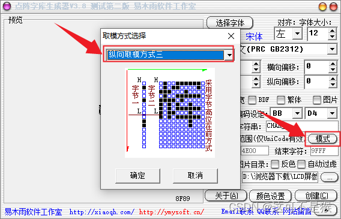
在编写函数时，可根据字模大小确定总字节数，写完一个字节数据横坐标加1直至画汉字的闪上一部分，列坐标加8，画汉字的下一部分直至画完一个汉字。
- /*
- \brief： 显示汉字（行列式，高位在前）
- \param： x：横坐标，y：列坐标
- w：字符宽度 h字符高度
- size：汉字大小
- Font：保存汉字的首地址
- colour：颜色
- \retval： none
- */
-
- void LCD_DisplayChinese(uint16_t x,uint16_t y,uint16_t size,char *Font,uint16_t colour)
- {
- char *pFont = Font;
- uint8_t GBKL,GBKH,tmp;
- uint16_t SIZE = size*size/8;//计算字节数
- uint16_t y0=y;//记录第一行显示的初始位置
- uint16_t x1=x;//记录显示的初始位置
- uint16_t y1=y;
- uint16_t i,j;
- uint32_t Addr_offset;//汉字的偏移地址
- uint8_t *pBuff = malloc(SIZE);//动态分配空间
- while(*pFont != '\0')
- {
- //计算汉字的偏移地址
- GBKH = *pFont++;//高字节
- GBKL = *pFont++;//低字节
- if(GBKL < 0x7F)
- {
- Addr_offset = ((GBKH-0x81)*190 + GBKL - 0x40)*(size * 2);
- }
- else
- {
- Addr_offset = ((GBKH-0x81)*190 + GBKL - 0x41)*(size * 2);
- }
- //从flash中取出一个汉字
- switch(size)
- {
- case 16:W25Q64_ReadData(W25Q64_GBK_ADDR + Addr_offset,pBuff,SIZE);break;
- default :W25Q64_ReadData(W25Q64_GBK_ADDR + Addr_offset,pBuff,SIZE);break;
- }
- //显示一个汉字
- for(i=0;i<SIZE;i++)
- {
- tmp = *(pBuff+i);
- for(j=0;j<8;j++)
- {
- if(tmp & 0x80) //高位先发
- {
- LCD_DrawDot(x,y,colour);
- }
- tmp <<= 1;
- y++;
- }
- x++;
- if(x-x1 == size)
- {
- x = x1;
- y1 += 8;
- }
- y = y1;
- }
- //一个汉字显示完成，为下一个汉字显示做准备
- x += size;
- if(LCD_WIDTH - x < size)//考虑是否需要换行
- {
- y0 += size;
- x = 0;
- }
- y = y0;
- }
- free(pBuff);//释放空间
- }
函数用于显示一个或多个汉字。
（1）变量定义秉承需要什么定义什么，定义一个指针指向要显示的汉字“串”；定义GBK_L和GBK_H用于计算一个汉字的高低两位字节，tmp保存字库中的一个字节；计算汉字占用的字节数，记录初始位置；Addr_offset用于记录汉字在字库中的偏移地址（并非地址）；pBuff保存一个汉字的字模。
（2）计算汉字的偏移地址。
（3）使用W25Q64读函数从flash中读取字模并保存，这里只在flash中烧录了一个16x16的GBK字库，可以根据的需求定义不同尺寸的汉字。地址为GBK在flash中的起始地址加上汉字的偏移地址就可以定位到汉字字模在flash中的位置。
（4）显示一个汉字，读取完成一个汉字字模后，按照汉字的取模方式进行画字节。首先依次取出字模的每个字节，在设置的列坐标上画一个字节；随后横坐标递增，并判断是否画完汉字的上一部分；随后画下一部分，直至画完一个汉字。
（5）偏移横坐标，画下一个汉字。如果屏幕宽度不够，则换下一行显示。
（6）最后释放申请的动态空间。
2.1 汉字取模
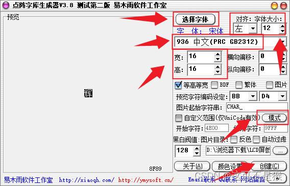
在软件上选择喜欢的字体以及字体大小，设置字体的宽高（这个是字体的尺寸。例如字体大小为12，宽高为16x16，实际生产的汉字大小就是16x16）。选择字库，可以选择GB2312或者GBK等。
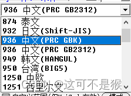
这里我选择字库GBK，选择模式3，最后生成一个DZK后缀的字库。
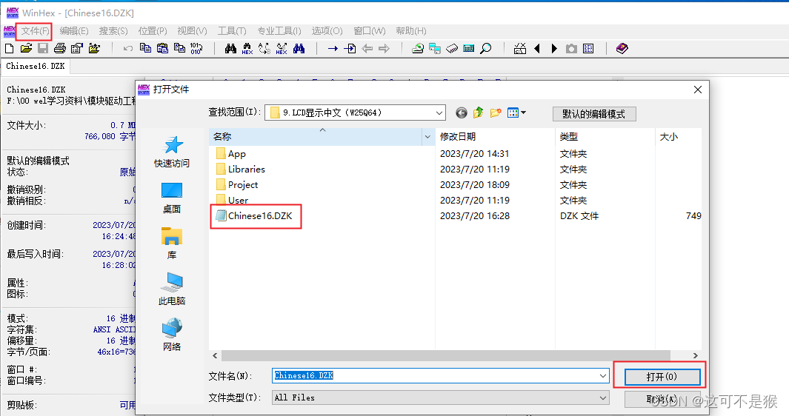
在WinHex软件中打开生成的字库（直接打开是一堆乱码），就可以看到生成的十六进制编码形式的字库了，只需要复制这些十六进制文件到工程中写入FLASH即可。
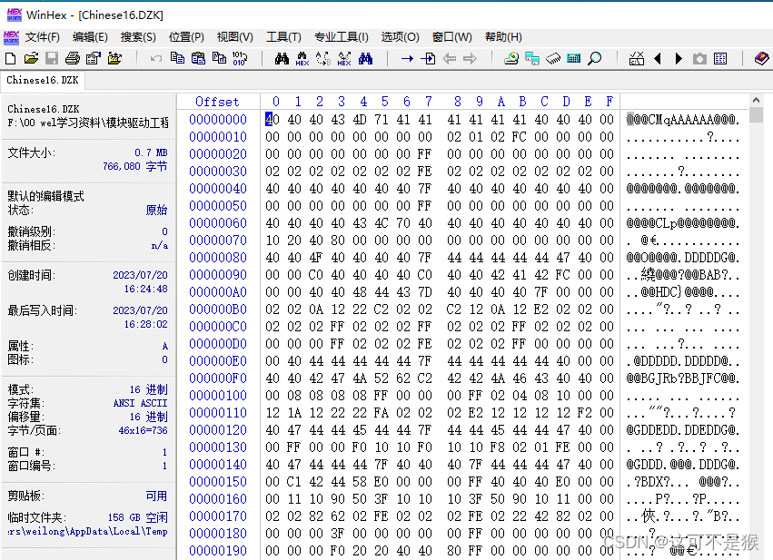
在WinHex中就可以看到汉字在字库的的位置，offset为偏移量。 由于生成的字库很大，不能一次性直接保存到工程中，要分批次写入flash。
3. W25Q64烧录字库
在WinHex软件中选择所有十六进制，然后定义选快，这里选择分两次写入所以定义选块为起始到中间。
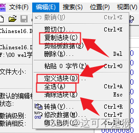
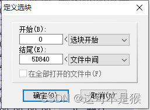
最后复制选快，选择生成C源码。
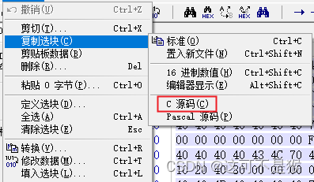
粘贴到工程文件中，就是一个unsigned char类型的数组，一共383041字节，这个数字相对于MCU来说非常大了。
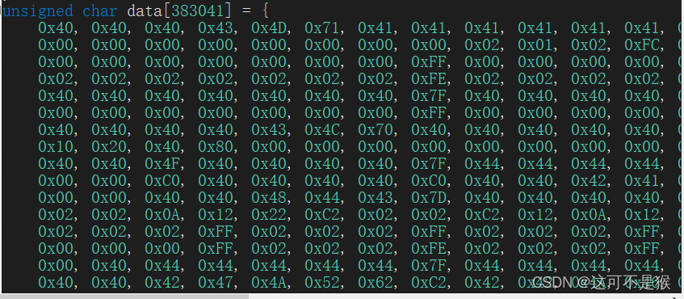
我这里用一个专门的文件保存这些字库。注意复制下一半字库时，应该从文件中间+1到文件结尾，不能直接从文件中间到文件结尾，否则文章中间这个字节的数据会有一个重复，后面的数据也都向后偏移了一个字节。读取的时候就会发生错误。
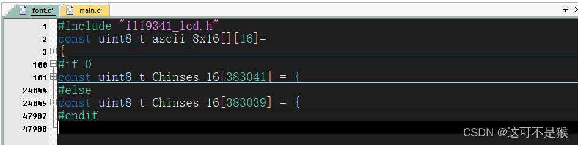
然后分次写入字库。
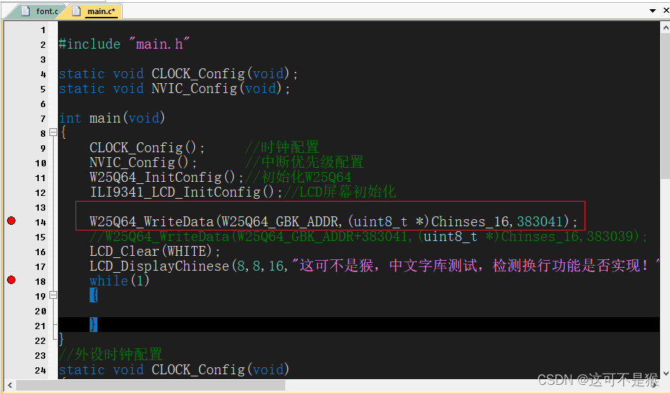
这里是先烧录前半段字库，font.c中的 #if 0改为#if 1。这里的起始地址可以根据自己的需求设置，起始地址这里为0x100000。此时将编译好的代码烧录到单片机时，就会很慢。这里是用的调试功能烧录代码，当代码运行到W25Q64的下一行时，表示字库烧录完成，然后改变偏移地址，写入下半段字库。最后屏蔽写字库函数，font.c的字库也可以删掉或者屏蔽掉。最后执行LCD显示汉字函数，测试字库是否写入成功。
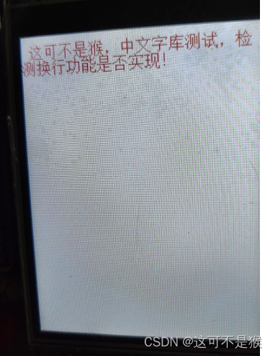
4.附件
工程代码：
链接：https://pan.baidu.com/s/1knCY6ndloHx6GPAyfEWpQg?pwd=1234
提取码：1234
2023/07/21


 102
102
 CSDN-Ada助手
CSDN-Ada助手


 到【灌水乐园】发言
到【灌水乐园】发言


在接下来的创作中，我建议您可以进一步探索如何在STM32中实现LCD显示更多样式的汉字，或者通过其他方式提高汉字显示的效果。此外，您也可以考虑分享一些关于汉字显示相关的实际应用案例，让读者更好地理解和应用您所分享的知识。
非常感谢您一直以来的辛勤创作，期待您未来更多精彩的博客！